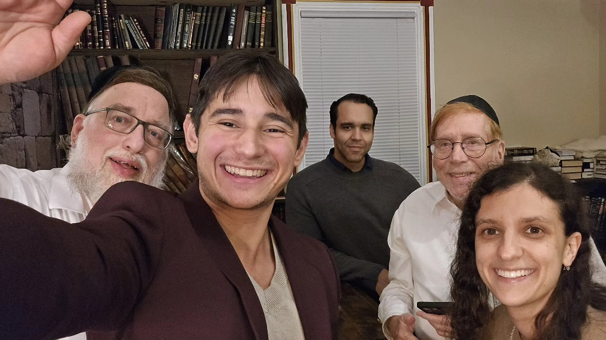
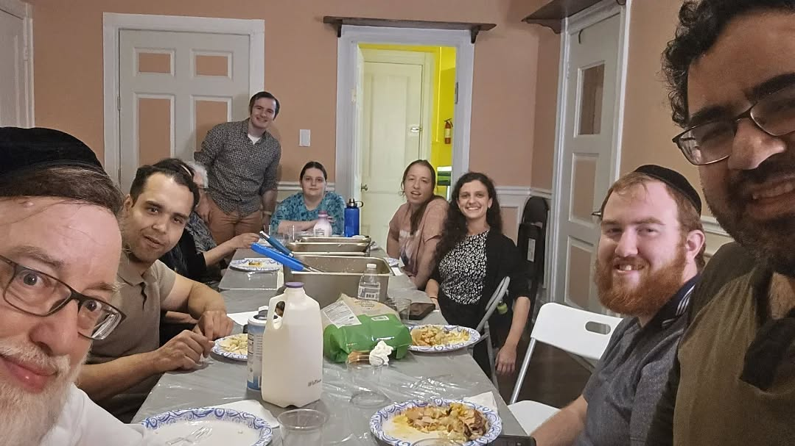
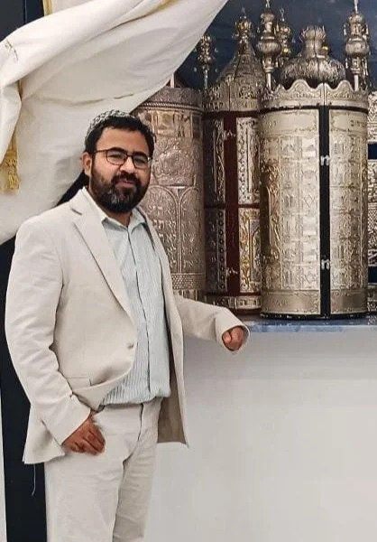

 SUPPORT BETH AVRAHAM
SUPPORT BETH AVRAHAM
Help Our Community Thrive
From daily tefillah to holiday celebrations, your generosity keeps our synagogue active and welcoming year-round.

Milton Torres-Ceron is a biologist specializing in Ecology and Environmental Science, with over a decade of professional experience. He is currently pursuing a PhD in Ecology. He is engaged to the woman of his dreams and they hope to celebrate their wedding soon.
Milton is deeply passionate about Torah study, with a particular appreciation for the wisdom of Sephardic Hakhamim. The teachings of Breslov Hasidut also hold a special place in his heart, because of its emphasis on service to God with gratitude and joy. The teachings of Rebbe Nachman of Breslov and Rabbi Shalom Arush have been especially influential in shaping his spiritual journey in recent years. He also draws inspiration from other notable figures, including the Rambam (Maimonides), Rabbi Ben Zion Meir Hai Uziel, Rabbi Haim David Halevy, Rabbi Shalom Messas, Rabbi Rafael Meldola, Rabbi Jacob Sassportas, and Rabbi Lord Jonathan Sacks.
Milton has a keen interest in Jewish liturgy and is a proud enthusiast of the Judeo-Spanish (Ladino) and Judeo-Arabic languages. He enjoys volunteering to translate Rabbi Yagod’s shiurim from English to Spanish.


SUPPORT BETH AVRAHAM
From daily tefillah to holiday celebrations, your generosity keeps our synagogue active and welcoming year-round.